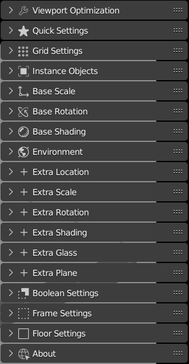
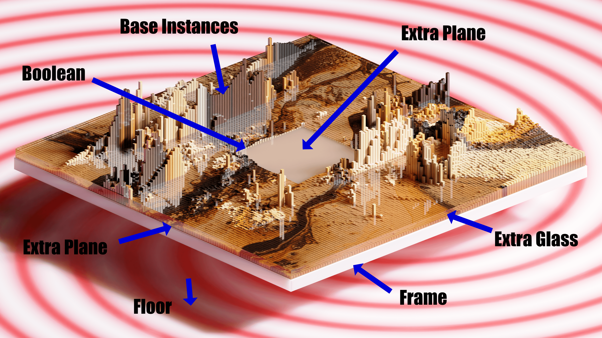
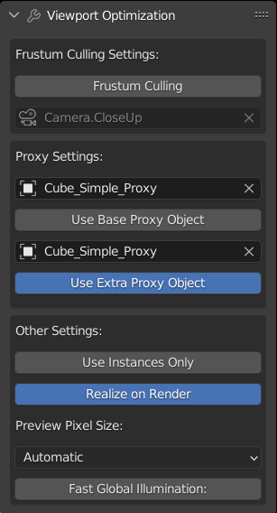
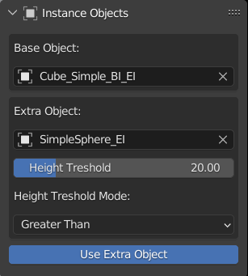
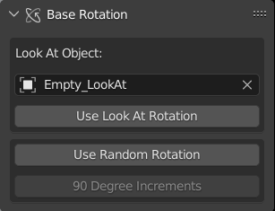
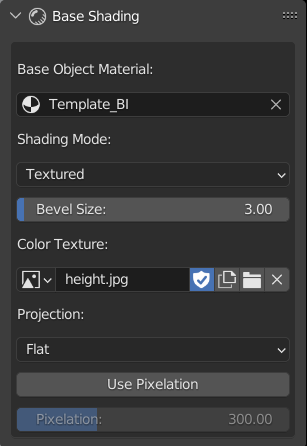
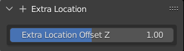
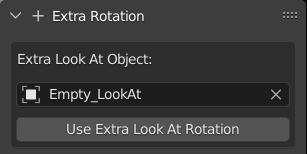
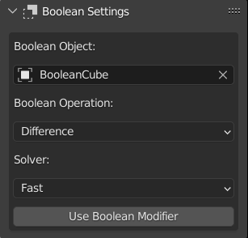
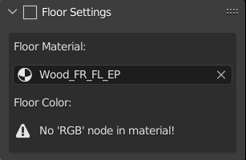

Settings
Note
Some settings might not work with each other
Note
Type in the settings textboxes if the scene gets heavy
The Anatomy of the Scene

Note
The extra plane is between the “frame” and “extra glass”
Note
The extra plane can be seen if using a boolean object or sparse grid
Viewport Optimization
Optimize things if the scene gets heavy.
Quick Settings

Grid Settings
Modify the grid on which the objects are placed.

Instance Objects
Change the objects to use as base and extra instances
Note
Extra objects are located on top of the base objects
Base Scale
Change the scale of base instances

Note
Can type in a number up to 1000 for the “Base Height Multiplier”
Base Rotation
Change the rotation of base instances
Base Shading
Shading settings for base instances
Environment
Environment Settings

Note
Option to use a different env. texture for lighting and background image
Extra Location
Offset the location of extra instances on the Z axis
Extra Scale
Change the scale of extra instances

Extra Rotation
Change the rotation of extra instances by setting an object to “look at”
Extra Shading
Shading settings for extra instances

Extra Glass
Settings for the glass layer

Extra Plane
Settings for the extra plane layer

Boolean Settings
Use a mesh to cut into the whole scene
Frame Settings
Settings for the frame

Floor Settings
Settings for the floor
